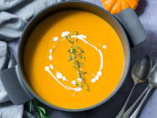
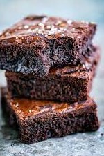
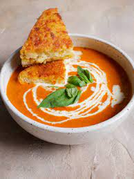
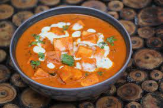
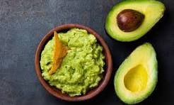

Pumpkin Soup
Ingredients:
- 2 lbs (900g) pumpkin, peeled and cubed
- 1 onion, chopped
- 2 cloves garlic, minced
- 4 cups (1 liter) vegetable broth
- 1/2 teaspoon ground nutmeg
- Salt and pepper to taste
- 1/2 cup (120ml) heavy cream (optional)
Preparation Time: 40 minutes
Instructions:
- In a large pot, sauté the onion and garlic until soft.
- Add the cubed pumpkin, vegetable broth, nutmeg, salt, and pepper.
- Cover and simmer for 25-30 minutes until the pumpkin is tender.
- Use an immersion blender to puree the soup until smooth.
- If using heavy cream, stir it in and simmer for an additional 5 minutes.
- Adjust seasoning as needed and serve hot.

Chocolate Brownie
Ingredients:
- 1 cup (225g) unsalted butter
- 1 and 1/4 cups (250g) granulated sugar
- 3/4 cup (75g) unsweetened cocoa powder
- 1 teaspoon vanilla extract
- 1/4 teaspoon salt
- 2 large eggs
- 1/2 cup (60g) all-purpose flour
- 1 cup (175g) semi-sweet chocolate chips
Preparation Time: 45 minutes
Instructions:
- Preheat oven to 350°F (175°C). Grease and flour a 9x9 inch baking pan.
- Melt the butter in a large bowl in the microwave or on the stove.
- Stir in sugar, cocoa powder, vanilla, and salt into the melted butter.
- Beat in the eggs, one at a time, until well combined.
- Slowly fold in the flour until just combined, then stir in the chocolate chips.
- Pour the batter into the prepared pan and spread it evenly.
- Bake for 25-30 minutes or until a toothpick inserted into the center comes out with moist crumbs, but not wet batter.
- Cool completely in the pan on a wire rack before cutting into squares.
- Serve and enjoy!

Tomato Soup
Ingredients:
- 2 lbs (900g) fresh tomatoes, chopped
- 1 onion, chopped
- 2 cloves garlic, minced
- 2 cups (480ml) vegetable broth
- 2 tablespoons olive oil
- 1 teaspoon dried basil
- 1/2 teaspoon dried oregano
- Salt and pepper to taste
- 1/4 cup (60ml) heavy cream (optional)
- Fresh basil leaves for garnish
Preparation Time: 35 minutes
Instructions:
- In a large pot, heat the olive oil over medium heat.
- Add the chopped onion and garlic, sauté until soft.
- Add the chopped tomatoes, dried basil, dried oregano, salt, and pepper. Cook for about 15 minutes until tomatoes are softened.
- Stir in the vegetable broth and let the mixture simmer for another 10-15 minutes.
- Use an immersion blender to puree the soup until smooth.
- If using heavy cream, stir it in and simmer for an additional 5 minutes.
- Adjust seasoning as needed, garnish with fresh basil leaves, and serve hot.

Paneer Butter Masala
Ingredients:
- 200g paneer, cubed
- 2 tablespoons butter
- 1 onion, finely chopped
- 2 tomatoes, pureed
- 1-inch ginger, grated
- 3-4 cloves garlic, minced
- 1/2 teaspoon red chili powder
- 1 teaspoon coriander powder
- 1/2 teaspoon garam masala
- 1/4 cup (60ml) heavy cream
- Fresh coriander leaves for garnish
- Salt to taste
Preparation Time: 40 minutes
Instructions:
- Heat butter in a pan, add chopped onion, ginger, and garlic. Sauté until golden brown.
- Add the pureed tomatoes, red chili powder, coriander powder, garam masala, and salt. Cook until oil separates.
- Add paneer cubes and mix gently. Simmer for 5-7 minutes.
- Stir in the heavy cream and cook for another 2-3 minutes.
- Garnish with fresh coriander leaves and serve hot with naan or rice.
Naan Pizza
Ingredients:
- 2 pieces of naan bread
- 1/2 cup (120ml) pizza sauce
- 1 cup (120g) shredded mozzarella cheese
- Assorted toppings (e.g., sliced bell peppers, onions, olives, mushrooms, etc.)
- 1 tablespoon olive oil
- Fresh basil leaves for garnish
- Salt and pepper to taste
Preparation Time: 15 minutes
Instructions:
- Preheat oven to 400°F (200°C).
- Place naan bread on a baking sheet. Spread pizza sauce evenly over each naan bread.
- Sprinkle shredded mozzarella cheese over the sauce.
- Add assorted toppings as desired. Season with salt and pepper.
- Drizzle olive oil over the toppings.
- Bake in the preheated oven for 10-12 minutes or until the cheese is melted and bubbly.
- Remove from the oven, garnish with fresh basil leaves, slice, and serve hot.

Guacamole
Ingredients:
- 2 ripe avocados, peeled and pitted
- 1 tomato, diced
- 1/4 cup (60ml) red onion, finely chopped
- 1/4 cup (15g) fresh cilantro, chopped
- 1 jalapeño pepper, seeded and minced (optional)
- 1 lime, juiced
- 1/2 teaspoon cumin powder
- Salt and pepper to taste
- Tortilla chips or vegetable sticks for serving
Preparation Time: 15 minutes
Instructions:
- Mash the avocados in a bowl using a fork or potato masher.
- Add diced tomato, chopped red onion, minced jalapeño (if using), and chopped cilantro to the mashed avocados.
- Squeeze lime juice over the mixture and sprinkle with cumin powder, salt, and pepper.
- Gently mix all ingredients until well combined.
- Adjust seasoning if needed and serve immediately with tortilla chips or vegetable sticks.